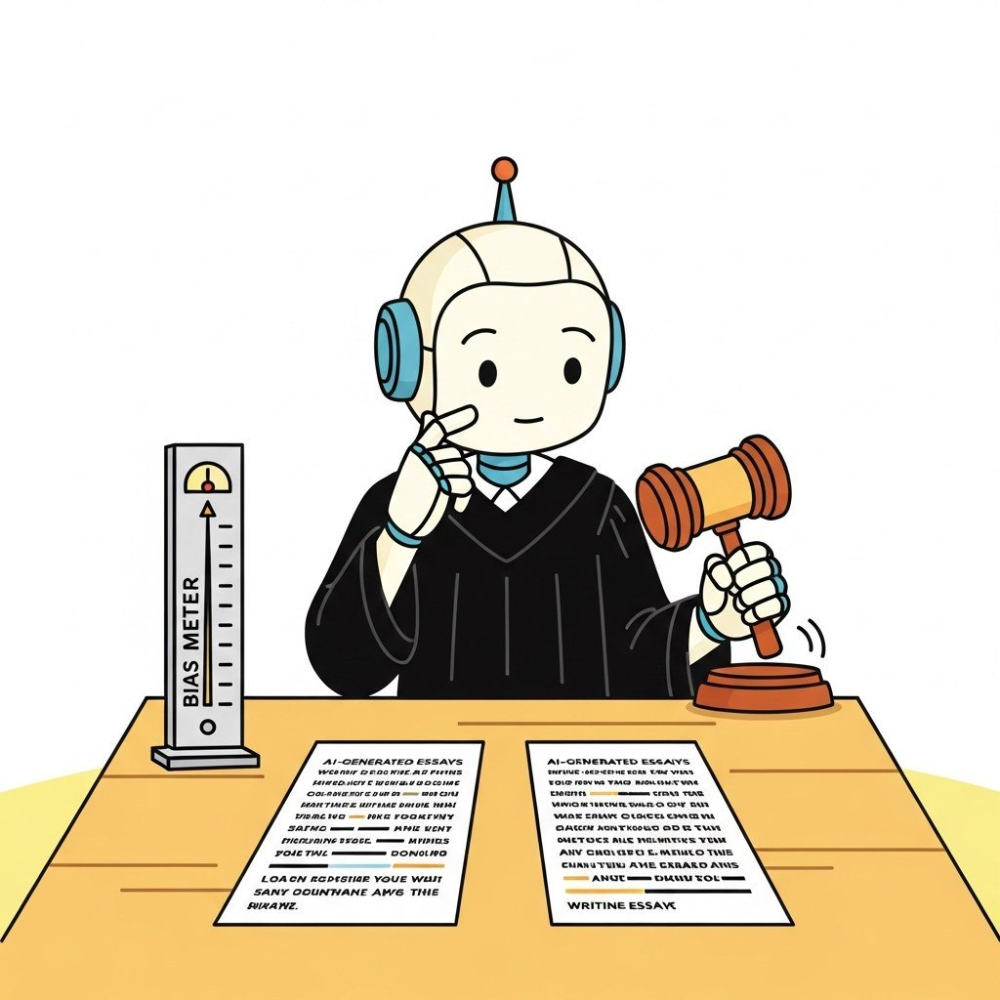

Big Picture
LLM-as-Judge is the dominant automated-evaluation pattern in 2025-2026: a powerful LLM scores outputs from other LLMs against a rubric. It works because grading is often easier than generating, but it brings its own bias profile (position, length, verbosity, self-preference). This chapter covers when to use it, how to debias it, how to train custom judges, and the multi-judge ensemble patterns that make it production-grade.
Sections in This Chapter
- 46.1 Why LLM-as-Judge Matters When human eval is too slow / expensive and reference-based metrics miss the point: when and why LLM-as-Judge replaces them. Entry
- 46.2 Judge Reliability and Common Biases Position, length, self-preference, anchoring, and style bias, the five systematic failure modes every LLM judge exhibits. Intermediate
- 46.3 Debiasing Techniques: Position, Length, and Verbosity Order swapping, length normalization, calibration, and the recipes that turn an unreliable judge into a production-grade one. Intermediate
- 46.4 Training Judge Models Fine-tuning a model to be a better judge: distillation from a frontier judge, reward modeling, and the agreement-with-humans target. Advanced
- 46.5 Multi-Judge Ensembles and Production Patterns Multi-judge voting, panel-of-judges, periodic human calibration, and the production patterns that ship LLM-judged evals. Advanced
What's Next?
This chapter begins with Section 46.1: Why LLM-as-Judge Matters. Each section builds on the previous one, so we recommend reading them in order.